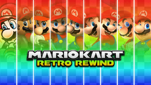
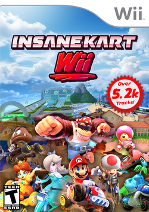

Pistas de la comunidad
Una de las partes más importantes de las modificaciones del juego es su facilidad para crear contenido
completamente nuevo y poder añadirlo al juego base, una de los primeros elementos que se cambió fueron
las pistas, evolucionando con el tiempo y creando herramientas para hacer esta tarea más fácil

Esta es una de las primeras pistas custom jamás creadas para Mario Kart Wii.
Realizada por la creadora Mayro, conocida actualmente por crear distribuciones de
pistas y música personalizada, GBA Rainbow Road destaca por llevar la caótica pista de Mario Kart:
Super Circuit al motor tridimensional.

Boshi Skatepark es un popular circuito personalizado inspirado en un parque de patinaje y tematizado
en torno a Boshi, el icónico y rebelde Yoshi azul con gafas de sol de Super Mario RPG.
Creado por Luke Chandler, Boshi Skatepark destaca por su diseño urbano lleno de elementos
característicos de un skatepark.

Mushroom Peaks es considerado el circuito personalizado (custom track) más icónico, antiguo y
controversial en la historia de Mario Kart Wii.
Creado originalmente a finales de 2009 por los creadores MrBean35000vr y Chadderz, creadores también
de la mayor distribución de pistas CTGP Revolution, Mushroom Peaks destaca en su infame dificultad
debido al uso de champiñones rojos y verdes, que suelen ser muy dificil predecir la dirección al
rebotar en ellos.
Distribuciones
Antes de la creación de distribuciones, los jugadores instalaban las pistas y sustituían las originales
del juego por las nuevas, necesitando volver a cambiarlas cuando se instalen otra, y teniendo un máximo
de 32 pistas personalizadas a la vez.
Esta distribuición creada por MrBean35000vr y Chadderz permite al
jugador competir en 200 pistas nuevas, de manera offline o incluso online
CTGP-R lets you play new and remade tracks offline or online with players around the world.
Incompatibilidad de online entre Wii y Wii U
Añadido crossplay Wii, Wii U e incluso PC

Creado y coordinado principalmente por el desarrollador ZPL, su objetivo fundamental es reunir la
historia nostálgica de la saga en un solo juego. Las pistas de juegos anteriores tienen que ser
convertidas al motor 3d de Mario Kart Wii, esta distribución incluye pistas originales nunca antes
jugadas, e incluso pistas de juegos posteriores a Mario Kart Wii
Sus características se pueden resumir en:
- Todos los circuitos retro oficiales
- Expansión masiva de contenido (+300 pistas)
- Servidor online y sistema competitivo
- Usando la arquitectura WiimFI
- Sistema de puntuación por elo
- Salas públicas o privadas
- Accesibilidad e instalación cómoda
- Instalación desde pendrive
- Menú de configuración directamente en la consola
- Cargar la distribución usando el disco origina del juego

Hasta la fecha, la distribuición con más pistas, más de 5400. Entre estas se incluyen algunas
clásicas como las más recientes. Es recomendable cargar esta distribución en emulador o en una Wii
U, ya que el hardware de la Wii no es suficiente.
This is by far of the best Mario Kart mods I’ve ever seen, It’s definitely better than CTGP
revolution. 10/10: would recommend to anyone.